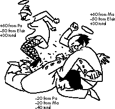

So shines a good deed in a weary world.
-- Willy Wonka
We all shine on.
-- John Lennon, Instant Karma
We at Delta Tao Software (creators of Spaceward Ho!, Strategic Conquest, and Eric's
Ultimate Solitaire) have been working on Clan Lord, a network game that may someday
have thousands of players exploring and colonizing an electronic landscape. We want a
harmonious online world that's enjoyable for every player, and we've come up with a
system that encourages this, without authoritarian overtones -- or at least we hope it
will. This column looks over some of our system's mechanics, repercussions, and
possible applications beyond gaming, and gives some food for thought for your own
projects.
Clan Lord is a big Mac network game. (No, not a Big Mac network game; we'd hate
getting sued by McDonald's!) Network games are nothing new to us, but now, with the
massive proliferation of the Internet, we want to do a truly epic game. Clan Lord
doesn't fall under the traditional definition of a game: there's no end, and there are no
winners and losers. It's more like a complete world, and each player is a member of an
online society. Online societies naturally develop their own customs, ethics, and
morals, just as other groups do. Our goal is to have the world be enjoyable -- a
pleasant place to meet and interact.
The key to a good party is inviting the right people. Some people enhance their
environment. In an online world, they answer questions, help people, and encourage
others to exhibit proper behavior. We'll call these people "good."
Some people do their best to ruin the party for everyone. In an online world, they
ridicule, shout, and abuse. They're often found saying things like "Bob Dole is a
lemonhead!" and "HOWARD STURN RULEZ!" We'll call these people "bad."
On a service like America Online, the worst people are eventually ejected. But good
people generally receive only personal satisfaction from their sometimes considerable
efforts. That the Internet information-sharing exchange works so well is a marvel that
speaks well of (oft-ridiculed) human nature, but it could work even better. Our goal
is to increase the ratio of good people to bad and the likelihood of good behavior.
Without external controls, games like this (usually called MUDs, for Multi-User
Dungeons) tend to devolve into hack-and-slash slugfests. New players join in, only to
find themselves repeatedly killed by more experienced players. Discouraged and
humiliated, they abandon the game. This problem is usually "fixed" by rule changes
that make it impossible to attack newer players, or by threats from the game
developers to eject (bad) people who hunt other players. These solutions often cause as
many problems as they solve. Established games are most successful when there's a
core of (good) veterans who encourage and protect the "newbies."
So we want lots of good people, and not too many bad ones -- but how do you tell one
from the other? A host could moderate, flagging people one way or the other. But this
is subjective, and it reeks of authoritarianism. It's also too much like work. We came
up with a painless, automatic solution for our game: digital karma.
For every day you spend in Clan Lord, you can give 100 karma points to other players,
as either good karma or bad karma. If someone solves a problem for you, or says
something you agree with, or even gives a friendly word to a stranger, you can send
them some good karma. If someone insults, curses, lies, or bugs you in any way, you
can send them some bad karma. You can't give karma to yourself, and you can't change
(or respend) the karma other people give you.
Over time, this karma adds up to a number telling how "good" a person is. People with
good karma earned it with good words and deeds, and people with bad karma earned it
by being annoying and antisocial. In Clan Lord, some places are accessible only to
people with good karma, while people with bad karma may have to fight their way out
of "Hell" when they die. Organizations of players (called clans, of course) also have
karma ratings, just by summing the karma of their members.
There's never been a digital karma system, so we spent a lot of time worrying that it
might cause as many or more problems than it solves. What if bad people abuse the
system to make themselves appear good? What if good people go unrewarded, become
disillusioned, and go bad or -- worse -- quit altogether? It might be that, since the
total sum of karma is large, individual abuses would get averaged out. Since each
person gets 100 karma points to distribute per day, thousands of people means
hundreds of thousands of karma points moving around. However, since the average
karma received by each person is 100 a day, an individual can concentrate his or her
karma to have a substantial influence on specific other individuals.
For example, Ma and Pa Barker spend a day tormenting Elvis. (See Figure 1.) Elvis
gives each of them 50 bad karma. But Ma gives Pa 80 good karma for holding Elvis
down while she kicks him. And Pa gives Ma 80 good karma for doing such a good job
tying Elvis's hands to his ankles. And they each give Elvis 20 bad karma for whining so
much. When lovely Rita (Meter Maid) comes by, she might cart Elvis (with 40 bad
karma) off to jail for tormenting the obviously virtuous Barkers (with 30 good karma
each). "You must have really made them angry," she murmurs as she slips on the
handcuffs.

Figure 1. Karma distribution
This sort of thing is certain to happen, but it's likely that in the long run the Barkers'
evil ways will catch up with them. Elvis can relate the tale to his friends George, John,
Paul, and Ringo, who together can inflict more bad karma on those nasty Barkers than
they know what to do with. What's more, the Barkers have gone on to annoy yet another
innocent bandsman who can inflict some bad karma of his own. In the long run, the
Barkers have to spend as much time pleasing people (even each other) as hurting them
to keep their karma in the black.
What about the problem of do-gooders not getting rewarded? Johnny B. wanders in to
find helpless Elvis, tied up and bruised from his run-in with the Barkers. He cuts
away the bonds, applies first aid, and gives Elvis some spending money. Elvis, instead
of bestowing good karma on Johnny B., inflicts bad karma on the Barkers. Johnny B.
finds himself with no better karma, despite his afternoon of good deeds. Maybe next
time he'll be less inclined to help the helpless.
But probably not. He still gets all the intangible karma he would have gotten before our
system was in place. Elvis is still grateful. Johnny B. will, over time, get plenty of
good karma for his benevolent activities. In addition to getting the unquantifiable
benefits that come with doing a good turn daily, he'll get an occasional reward of good
karma. He'll probably be even more likely to do good deeds than he was before.
Now, the worst case. Ozzy, after watching Natural Born Killers, decides it would be fun
to see just how much bad karma he can rack up. He traipses through the countryside
setting fire to outhouses, pushing grandmothers down stairs, and biting the heads off of
innocent rodents. He's bad to the bone. He racks so much bad karma that he grows horns
and hooves. But he doesn't care -- he's going for the record. The baddest cat ever, and
our little system gives him the numbers to prove it. Aren't we just egging him on?
There are always going to be a select few who delight in infamy. Perhaps a few of those
could be persuaded to form vigilante groups, hunting the Most Wanted of the Bad Karma
Boys. Just as many folks are going to go for the evil-punishing record as for the bad
karma record. We'd turn those of Ozzy's frame of mind against each other. His worst
enemy is his own kind.
Besides modifying behavior, karma studies can identify trends, and possibly give
warnings of societal problems. The ratio of good karma to bad karma is an indicator of
how happy the society is as a whole. A sudden drop in that ratio could be an early
symptom that something is wrong, giving us a chance to nip the problem in the bud. If
we do our job, that ratio should see a gradual increase over time, as we weed out things
that make people unhappy.
We'll no doubt also see some interesting statistics. I'm curious to see whether people
who send lots of bad karma are the same people who receive it, and vice versa. I've
certainly always suspected that that's how it works in life. Any complex economic
system, like our described karma system, is largely unpredictable. Who's to say what
kind of karma wars might erupt? A system like this will have consequences nobody
anticipates. It's fun to do thought experiments, as we've done here, but the fact is we
won't really know until afterward.
And there are lots of questions for which we hesitate to guess the answers: Is it better
to give karma feedback to recipients immediately, so as to help them modify their
actions appropriately? Or is it smarter to delay this information and make it
anonymous, so that repercussions and threats won't influence its delivery? Who
knows? These questions aren't likely to be answered without lots of testing and
experimentation, but once that's done, we're likely to have a more pleasant and
predictable online society.
We've been talking about digital karma in terms of our game, but that doesn't need to
be where it ends. Newsgroups and bulletin boards would certainly benefit by having
more good people and fewer bad. You could screen out bad-karma messages or the
people that post them. And people who post would get measurable feedback on how
helpful their posts are, without having to sift through a lot of noise.
Predicting how computers will be used has never been easy. In the fifties, people
thought computers would eventually calculate missile trajectories and save the world
from the evil communists. In the seventies, the advent of the personal computer led
Marketing people to reveal the true possibilities: we could balance our checkbooks and
organize our recipes.
In fact, technology has affected nearly every aspect of our lives -- or my life, anyway.
But technology hasn't had much effect on social behavior, which is probably the one
area where we need it most. With the possible exceptions of soothing fish tank
screen-savers and "simulations" that show the perils of evildoing by exploding the
spleens of undead Nazis, computers have made even less impact on social mores than
Dungeons and Dragons.
Not every piece of software, and certainly not every game, can (or should) try to have
social relevance. But it's sure fun to keep one's eyes open for the possibility. That's
how the Mac was created in the first place: computer geeks trying to change the world.
Naturally, karma already exists outside the online world -- it's just intangible and
unquantifiable. Do-gooders (darn them!) tend to get what's coming to them; I'm more
likely to go out of my way to help someone who has been helpful to others in the past.
But it would sure be nice to be able to quantify this karma, so that we could get an idea
of someone's "goodness" upon first meeting. Of course, it's possible that trying to
quantify karma like this, putting numbers to it, will just create a sort of "behavioral
economy," whereas the "real" karma, the intangible kind, will continue to exist
independently, however we keep score.
Wouldn't it be nice to be able to distribute karma in the real world? If we tracked it
properly, karma would be more important than credit -- as it should be. Someday,
with technology's help, we might be able to point a remote control and push a couple of
buttons to reward that nice librarian or those kids that wrote that great game. Or
finally do something about that granny in her fume-spewing Pinto, that dog-kicking
punk, or the neighbor who mows his lawn at five-thirty in the morning.
Indeed, digital karma could revolutionize society -- or maybe it's just a thought
experiment about a potential feature of a future game that might not even ship.
RECOMMENDED READING
JOE WILLIAMS is founder and president of Delta Tao Software, the self-proclaimed
"coolest company in the world." He writes a rambling daily e-mail column to which
you can subscribe by sending "subscribe joedeltalist" in the body of your message to
majordomo@outland.com. Joe has +47 karma.*
Thanks to my sweetheart Mary Blazzard, to my mom Nancy Williams, to all the great
folks on the Joedeltalist for helping push this column into readability, to Howard Vives
for the cool illustration, and to Bo3b Johnson, Dave Johnson, Mark "The Red" Harlan,
and Ned van Alstyne for their review comments.*